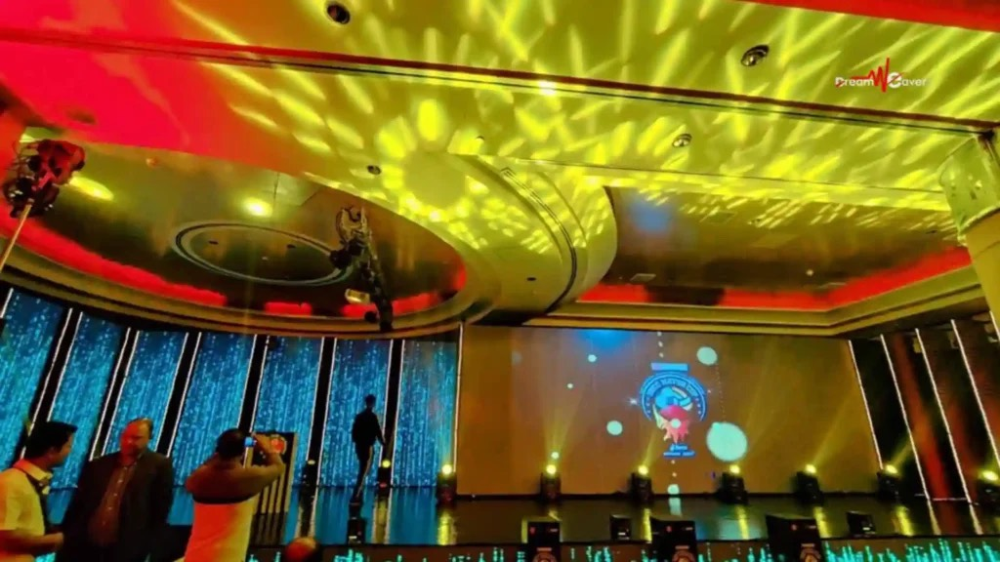

2025-02-16 — Event Insights
Social Media Event Promotion: Boost Engagement & Success
In today’s digital world, social media event promotion is indispensable for creating awareness and driving attendance to your events. Whether you’re planning a corporate conference, wedding, or trade show, leveraging social media event promotion helps you reach a wider audience, create excitement, and engage potential attendees. With platforms like Facebook, Instagram, LinkedIn, and Twitter, social media offers incredible tools to help you market your event effectively.
At Dreamweaver Events, we understand the power of social media event promotion and how it enhances engagement. This blog will delve into the role of social media in event promotion and explore actionable social media event promotion ideas that can boost attendance and create lasting excitement around your event.
Why is Social Media Event Promotion Essential?
1. Wider Audience Reach with Social Media Event Promotion
The most significant advantage of social media event promotion is its ability to connect with a global audience instantly. Whether your event is in Dhaka, New York, or anywhere in the world, social media platforms enable you to share information with a wide range of people who may be interested in your event. With the ability to target users based on demographics, location, interests, and behaviors, social media event promotion offers precision that traditional methods can’t match.
Using targeted ads on platforms like Facebook and Instagram, you can promote your event to the right people at the right time, ensuring maximum visibility and engagement.
2. Engagement through Real-Time Interaction
One of the greatest benefits of social media event promotion is the ability to engage with your audience in real-time. Social media allows for constant interaction, whether it’s answering questions, posting updates, or building excitement before and during the event. This level of interaction fosters a sense of community and encourages attendees to stay engaged with your event online.
Social media platforms, such as Twitter’s live tweeting or Instagram’s Stories feature, are particularly great for keeping potential attendees informed, entertained, and excited.
3. Cost-effective marketing through Social Media
Compared to traditional marketing channels, social media event promotion is relatively inexpensive yet highly effective. Posting organically on your event’s social media pages allows you to reach a vast audience without spending much. If you want to take it a step further, running targeted paid social media ads can be a cost-efficient way to increase event visibility and drive ticket sales.
Whether you’re promoting through organic posts, influencer collaborations, or sponsored ads, social media event promotion provides incredible flexibility and value.
How to Use Social Media Event Promotion Effectively
1. Create Engaging Content for Event Promotion
Content is the cornerstone of social media event promotion. Engaging visuals, such as posters, teaser videos, countdown timers, and event highlights, are essential to catch your audience’s attention. Create posts that showcase your event’s unique aspects—whether that’s a prominent keynote speaker, entertainment, or special activities.
Post regularly with exciting updates to keep your audience engaged and motivated to attend. You can also share behind-the-scenes content to build excitement and make your followers feel more connected to the event.
2. Leverage Hashtags and Geotags for Event Promotion
Hashtags are a powerful tool for improving the reach of your event’s social media posts. Create a unique hashtag for your event, like #EventName2025, and encourage attendees to use it when sharing their content. This helps track posts related to your event and promotes a sense of community.
Additionally, geotagging your event location on platforms like Instagram and Facebook can help locals discover your event and increase its visibility among people in the area.
3. Collaborate with Influencers to Boost Event Engagement
Partnering with influencers is a proven strategy for social media event promotion. Influencers can promote your event to a larger and more engaged audience, which increases the likelihood of higher ticket sales and attendance. By working with influencers who have a significant following, you gain access to their trusted audience, amplifying your event’s message.
Offer influencers special perks like VIP access, complimentary tickets, or backstage passes to motivate them to share your event on their social media platforms.
4. Host Live Streaming and Interactive Content
Live streaming is a great way to promote your event and engage with your audience in real-time. Platforms such as Facebook Live, Instagram Live, and YouTube Live allow you to broadcast key event moments to online followers. This helps keep your audience engaged and builds excitement before the event even begins.
In addition to live streaming, interactive content like polls, quizzes, and live Q&A sessions can foster a deeper connection with your followers and make them feel more involved in the event.
5. Targeted Social Media Ads for Event Promotion
Paid social media ads can significantly enhance your social media event promotion efforts. Platforms like Facebook and Instagram provide advanced targeting options, allowing you to reach the right audience based on their interests, location, age, and behaviors. Whether you’re running ads to sell tickets or increase event awareness, paid social media advertising can drive impressive results.
Target your ads to specific demographics who are most likely to attend your event and increase your chances of achieving high engagement and attendance rates.
Creative Social Media Event Promotion Ideas for Engagement
To make your event stand out, consider these social media event promotion ideas that can generate excitement and increase engagement:
Early Bird Ticket Announcements: Share exclusive early bird ticket discounts on your social media pages to incentivize early sign-ups.
Host Giveaways and Contests: Run contests where participants can win free tickets or VIP passes to your event. This increases engagement and encourages your followers to share the event.
Behind-the-Scenes Sneak Peeks: Share sneak peeks of event preparations, such as setting up the venue or rehearsing for performances. This gives followers a taste of what’s to come.
Countdown Posts: Start a countdown on Instagram or Facebook, posting daily or weekly updates as the event date approaches. This helps build anticipation.
Interactive Polls and Q&A Sessions: Engage your audience with polls, quizzes, and live Q&A sessions to keep them involved in the event’s journey.
How Dreamweaver Events Uses Social Media Event Promotion
At Dreamweaver Events, we specialize in social media event promotion that drives real results. By creating tailored social media marketing campaigns, we help increase your event’s visibility, engagement, and attendance.
Our team uses a blend of organic and paid strategies to maximize your event’s online presence. From influencer collaborations to custom content creation, Dreamweaver Events ensures that your event garners the attention it deserves. We take care of everything from managing social media accounts and curating posts to executing paid ad campaigns—allowing you to focus on what matters most: your event.
By using social media event promotion to connect with your audience, Dreamweaver Events helps build excitement and drives higher engagement. Our expert strategies and ideas ensure that your event not only reaches your target audience but also exceeds your attendance goals.
FAQ Section: Common Questions About Social Media Event Promotion
How can social media help promote my event?
Social media helps increase your event’s visibility, engage attendees, and foster excitement through targeted content and real-time interaction.
What types of content should I post on social media for my event?
You should post teasers, behind-the-scenes footage, countdowns, speaker introductions, and interactive content like polls to engage your audience.
Can influencers help with event promotion?
Yes, influencers can amplify your event’s message by sharing it with their followers and encouraging them to attend, boosting engagement.
How do I create a hashtag for my event?
Create a simple, memorable hashtag that represents your event. Encourage attendees to use it to share their experiences, increasing visibility.
Should I use paid ads to promote my event?
Paid ads are a great way to increase visibility and drive ticket sales by targeting the right audience.
How often should I post about my event on social media?
Post regularly, but ensure the content is varied. Include updates, sneak peeks, and interactive content leading up to the event.
How do I measure the success of my social media event promotion?
Track metrics like engagement, clicks, shares, hashtag use, and ticket sales to evaluate the success of your social media strategy.
What are some fun ways to engage my audience before the event?
Run polls, share sneak peeks, or host giveaways to keep your audience excited and engaged before the event.
Can live streaming help with event promotion?
Yes, live-streaming event moments allow you to engage with your audience in real time and give followers a preview of what to expect.
How can I increase post-event engagement on social media?
Share highlights, thank attendees, and encourage them to post their experiences using your event hashtag.
Master Social Media for Event Promotion Success
When done right, social media event promotion can be one of the most powerful tools in your marketing arsenal. By using creative strategies and engaging with your audience, social media helps amplify your event’s reach, boost attendance, and ensure a memorable experience for all involved.
At Dreamweaver Events, we’re experts in crafting social media event promotion campaigns that take your event to the next level if you want to maximize engagement and make your next event a success, get in touch with our team today!
Ready to Boost Your Event’s Success with Social Media?
Suppose you’re ready to take your event to the next level with expert social media event promotion. In that case, Dreamweaver Events is here to help. Contact us today, and let us show you how we can make your event unforgettable!
Dreamweaver Events
Where Innovation Meets Event Perfection
Ready to bring your next event to life?
About us
Our Works
Contact us
WE CREATE EVENTS, PEOPLE REMEMBER